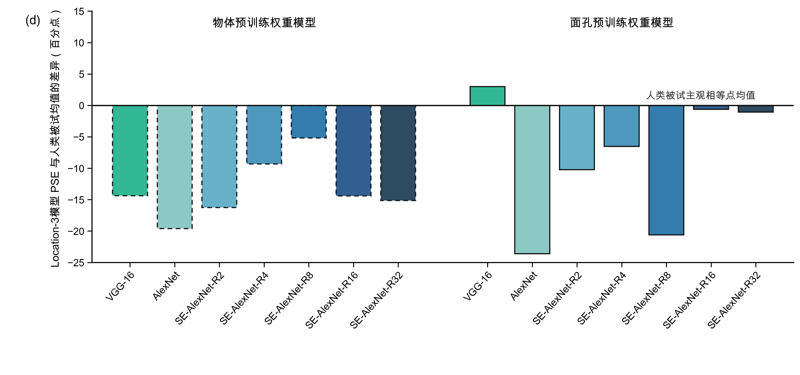
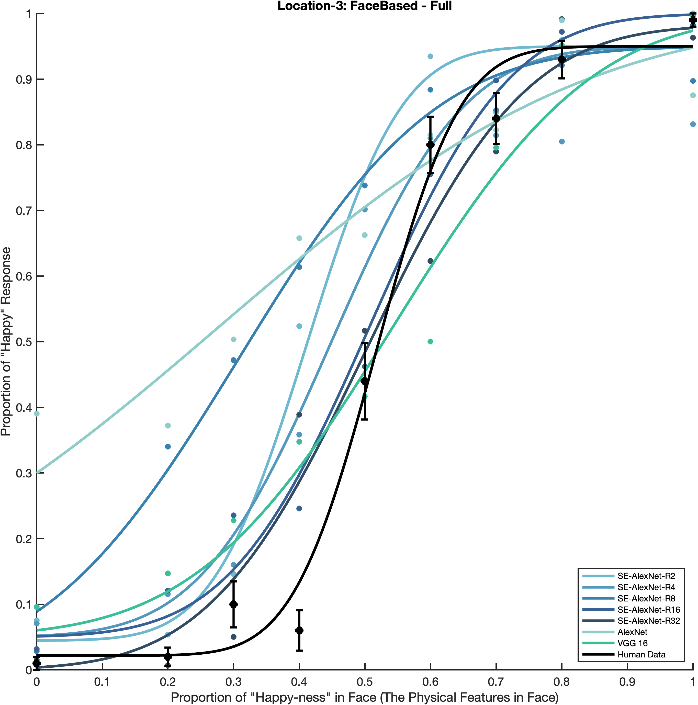
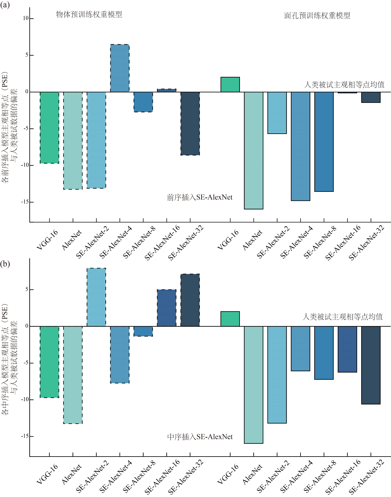
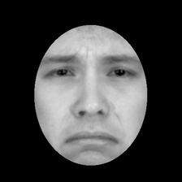

SE-AlexNet
Facial emotion recognition with channel recalibration
We tested how SE reduction ratio, insertion position, and pretraining affect emotion responses. Masked faces and Grad-CAM then let us examine which facial regions contribute to those responses.

Reduction ratio and emotion response
Experiment 1 · Face and object pretraining at R = 2, 4, 8, 16, and 32
The SE gate rescales a feature vector before classification.
 (1)
(1) (2)
(2)Reported result. The face-pretrained, late-insertion model at R = 16 has PSE 0.51 and RMSE 0.09 in the full-face condition; mean human PSE is approximately 0.52.


Behavioral analysis equations (3–5)
 (3)
(3) (4)
(4) (5)
(5)SE insertion position
Experiment 2 · Early, middle, and late insertion in the classifier pathway
Late insertion places SE between FC7 and FC8.

Occlusion and facial-region attention
Experiment 3 · Four masking conditions, Grad-CAM, and region analysis
Choose a pretraining source, insertion position, and reduction ratio. The four masking conditions update together using the representative panels in the manuscript’s Grad-CAM figure.
The unoverlaid inputs are aligned stimulus 11, included to explain each masking condition. The heatmaps are representative panels from final-manuscript Figure 7; the manuscript does not identify them as stimulus 11 or a same-image model comparison. View complete Figure 7 ↗
Region-level readout
Grad-CAM saliency was summarized in fixed eye, nose, and mouth regions on aligned 224 × 224 stimuli. Coordinates are image pixels.

EyesNoseMouth| Region | x | y |
|---|---|---|
| Eyes | 52–171 | 70–99 |
| Nose | 52–171 | 120–149 |
| Mouth | 52–171 | 169–199 |
For full faces, the reported diagnostic ratio was 0.95 ± 0.03 for face pretraining and 0.77 ± 0.03 for object pretraining (mean ± SEM; p < 0.001). Eye-region saliency was 0.21 versus 0.07 (p = 0.006).
Grad-CAM and ROI equations (6–9)
 (6)
(6) (7)
(7) (8)
(8) (9)
(9)Resources
Code, data, analysis, and model files
Cite this work
Publication details and a copyable reference will be added here when the final citation is available.